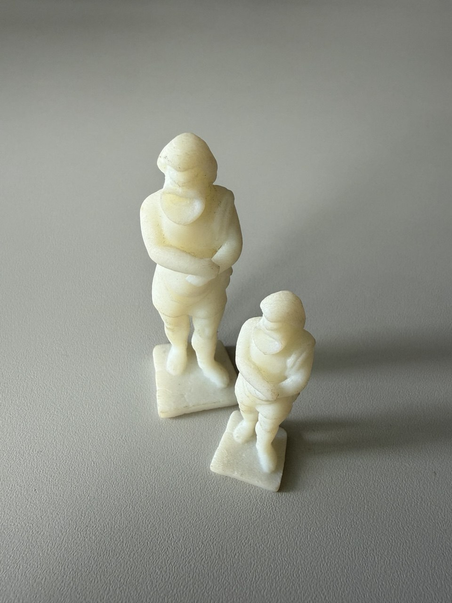
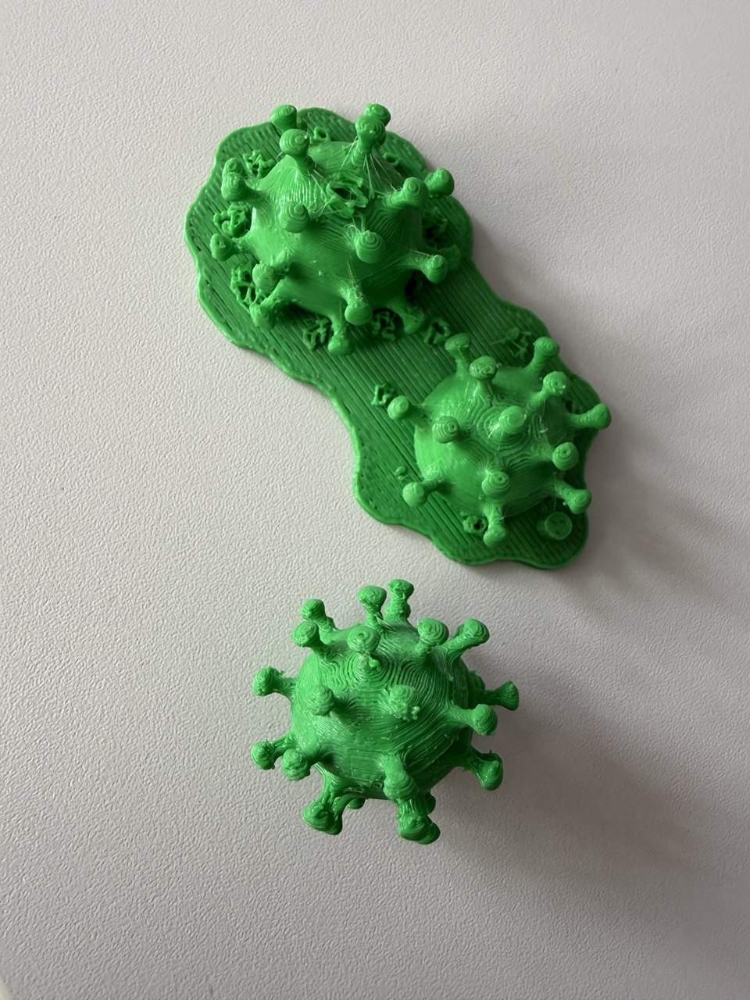
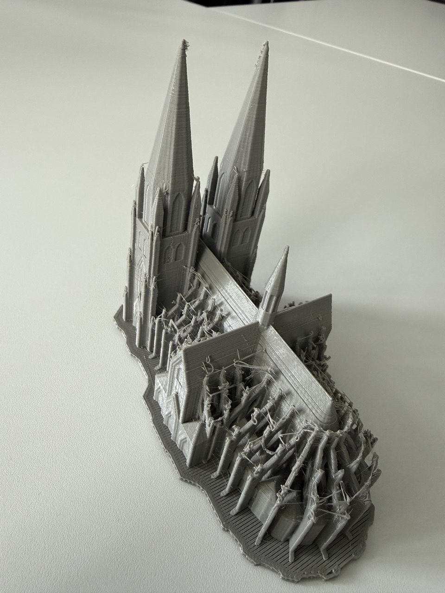
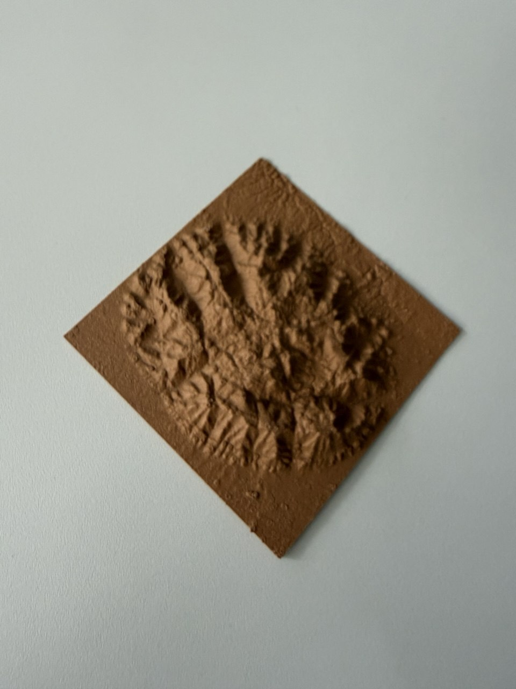
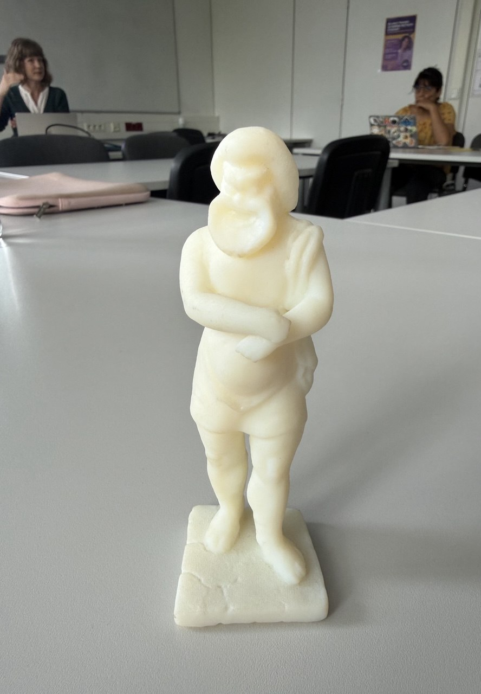

Sitzung 9: 3D-Modelle in der Archäologie
Einleitung: Archäologinnen und Archäologen benötigen 3D-Modelle, weil ausgegrabene Objekte oder Gebäude nach der Ausgrabung nicht wieder in ihren ursprünglichen Zustand zurückgebracht werden können. Deshalb müssen sie während und nach der Ausgrabung sorgfältig dokumentiert werden, damit die Informationen auch in Zukunft erhalten bleiben.
Fund und Befund
Ein Fund ist ein bewegliches Objekt, das man in die Hand nehmen kann, zum Beispiel Keramik, Münzen
oder kleine Figuren.
Ein Befund ist ein unbeweglicher archäologischer Fund, zum Beispiel ein Grab, eine Mauer oder die
Reste eines Gebäudes.
3D-Modelle in der Archäologie
3D-Modelle helfen dabei, archäologische Objekte dauerhaft zu dokumentieren. Sie werden für die Forschung, den Denkmalschutz sowie für Museen und den Unterricht verwendet. Oft bleibt nur ein kleiner Teil eines Bauwerks erhalten. Mithilfe von Vergleichsobjekten und wissenschaftlichen Informationen kann das ursprüngliche Aussehen rekonstruiert werden.
Structure from Motion (SfM)
Beim Structure from Motion wird aus vielen Fotos ein 3D-Modell berechnet. Dafür müssen sich die Bilder überlappen, damit gleiche Punkte auf mehreren Fotos erkannt werden. Bei kleinen Objekten bleibt die Kamera stehen und das Objekt wird gedreht. Bei Gebäuden bleibt das Gebäude stehen und die Person fotografiert es von allen Seiten.
Aufbau eines 3D-Modells
Ein 3D-Modell entsteht in mehreren Schritten:
Punktwolke
Drahtmodell
Textur
Die Textur gibt dem Modell Farben und eine realistische Oberfläche.
Methoden zur Erstellung von 3D-Modellen
- Structure from Motion (SfM): Bei kleinen Objekten bleibt die Kamera stehen und das Objekt wird gedreht. Bei Gebäuden bewegt sich die Person um das Gebäude.
- Laserscanning: Ein Objekt wird mit einem Laser vermessen und als 3D-Modell erfasst. Je nach Größe werden Handscanner, große Scanner oder Drohnen verwendet.
- Video: Auch aus Videoaufnahmen können 3D-Modelle erstellt werden.
- LiDAR: Mit Laserstrahlen kann sogar der Boden unter Bäumen erfasst werden. Diese Methode wird häufig für große Landschaften verwendet.
- CAD-Programme und Procedural Modeling: CAD-Programme dienen zur Bearbeitung von 3D-Modellen. Beim Procedural Modeling werden Gebäude mithilfe von Regeln und Algorithmen automatisch erstellt.
Mit Texturen, Oberflächen, Materialien und Farben wirken 3D-Modelle fast wie echte Objekte.
Digitale 3D-Modelle können mit einem 3D-Drucker als reale Objekte hergestellt werden. Das Modell
wird dabei Schicht für Schicht aufgebaut.
Fazit
3D-Modelle können auf Webseiten, in virtuellen Museen und in Online-Sammlungen veröffentlicht werden, damit möglichst viele Menschen sie nutzen können. Sie helfen dabei, archäologische Funde zu dokumentieren, zu rekonstruieren und langfristig zu erhalten. Außerdem spielen heute Geoinformationssysteme (GIS) und Künstliche Intelligenz (KI) eine immer wichtigere Rolle bei der Analyse archäologischer Daten.
Material aus der Sitzung




